我买了一个新电脑，现在应该如何使用呢？
前言
首先是系统。电脑相当于一块地，而系统就好似在地上建立的房子，没有房子，就很难住人。所以当然首先要装系统。当然了，买电脑的时候应该就已经预装了系统，这里就不再介绍装系统的方法了。
接着就是软件咯，就像是给房子置办家具，要不然空荡荡的总会很凄凉，当然多了也会拥挤。但是对很多电脑小白来说就是不知道软件究竟该以怎样的姿势安装。本文的诞生就是为了帮助小白成长为大白。
正文
假定我手里现在是一台只是刚刚装好系统的电脑（本文全以激活完成的Windows10系统为例）
换壁纸
首先，从最微不足道的方面来入手，那就是挑选壁纸。挑选一张舒适的壁纸既是美的享受，令人心情舒畅，也是对自己审美能力的证明。
具体怎么做呢？
我们打开浏览器，上网搜索高清壁纸，当然下方方框中的蓝字也是十分有吸引力的，搜索引擎也还有谷歌、必应等等，这里不做详细介绍，自行了解。
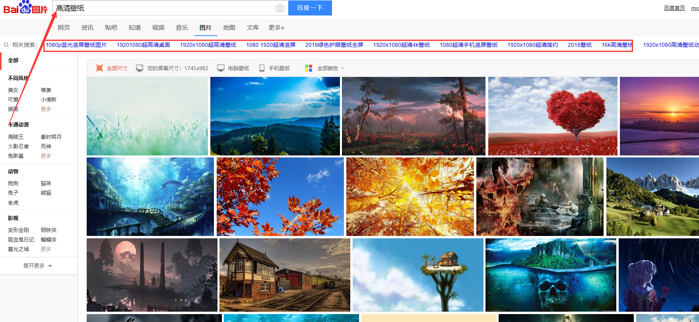
我们点一张图片进去，咋一看是不是就有蛮高清的感觉，如果有很强的像素感，说明清晰度不够高。
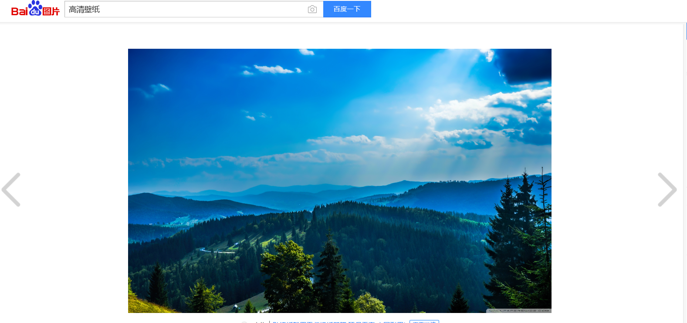
接下来我们右键保存
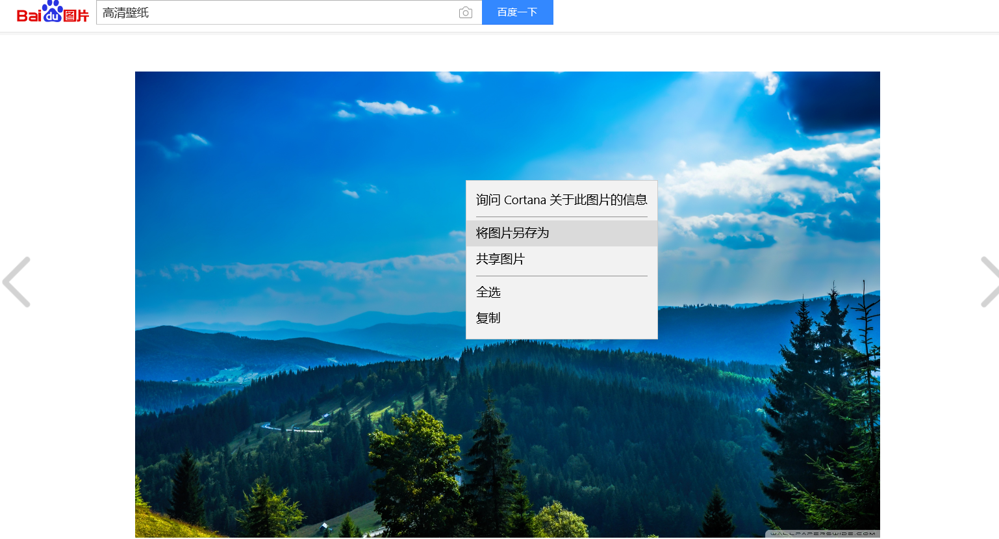
但是呢很多刚接触电脑的同学就是直接保存，我们要考虑图片存储的位置啊，就好比家里买啥东西都往同一个地方放，日子久了就会聚成一堆，然后in a mess乱七八糟。
系统默认的保存位置一般都在C盘，所以很多人的C盘会爆满，这也对电脑的流畅造成影响。
所以要在保存的时候要选好路径，这里我是选择了D盘的提前创建好用来存储图片的Img文件夹，如果没有提前建好，也可以在保存的时候新建文件夹并起名字。
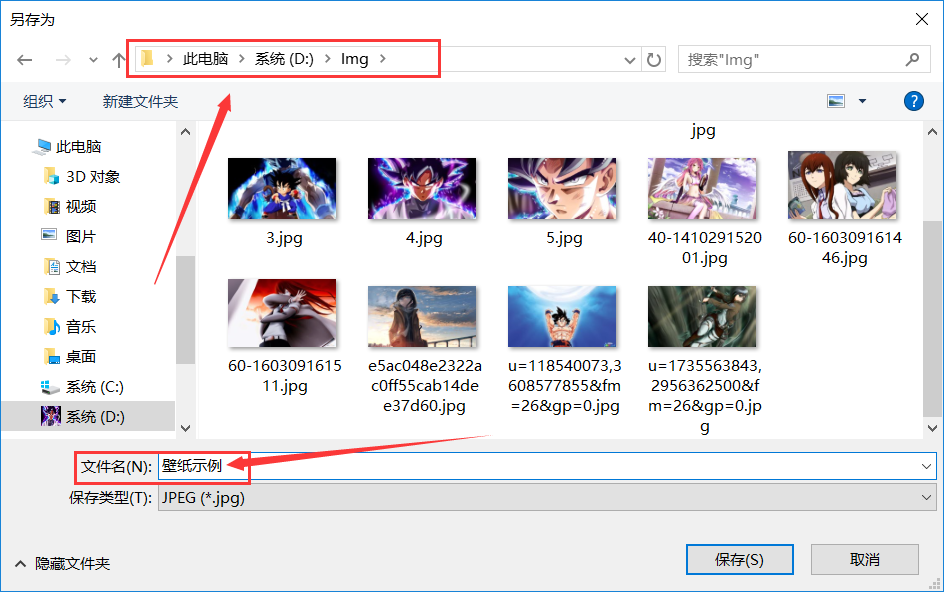
保存后我们就可以到D盘的Img文件夹找到那张图片。
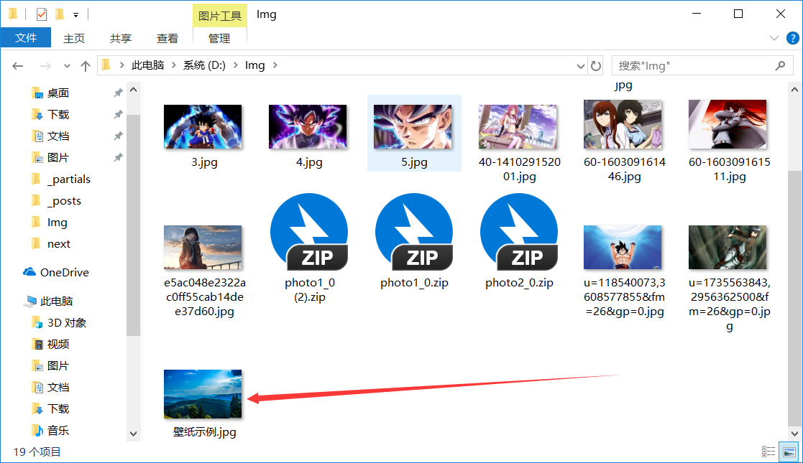
然后右键，选择设为壁纸
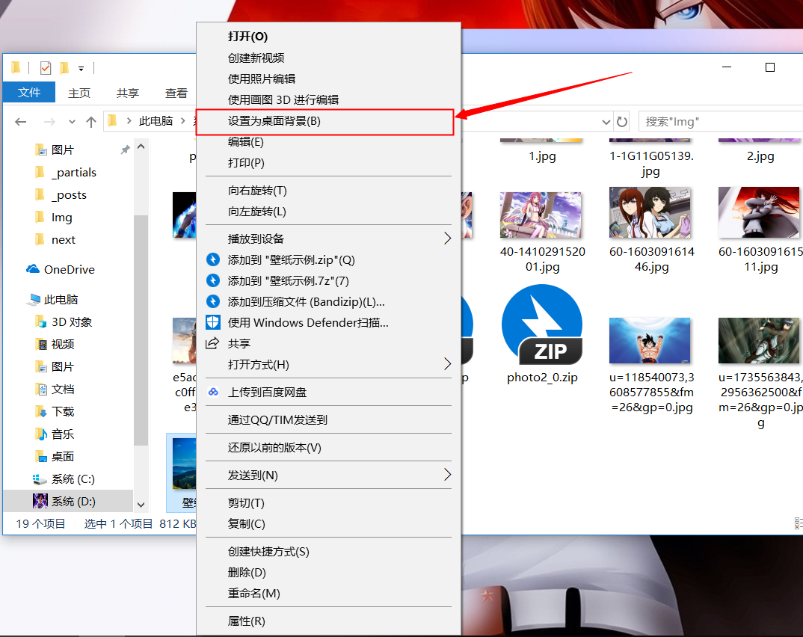
这样你的桌面壁纸就如你所想了。
下载软件
常规下载
然后就是装一些必要的软件咯，比如QQ、office之类的，这里我用迅雷来做演示吧。
首先还是用浏览器搜索，比如大家最熟知的百度
搜索结果成千上万，但是去官网下载是最可靠的，除非浏览器本身被收买，否则是不可能出错的
一进来就是这个页面，道理来说一键下载就可以了，但是还是给大家演示一下官网的浏览过程
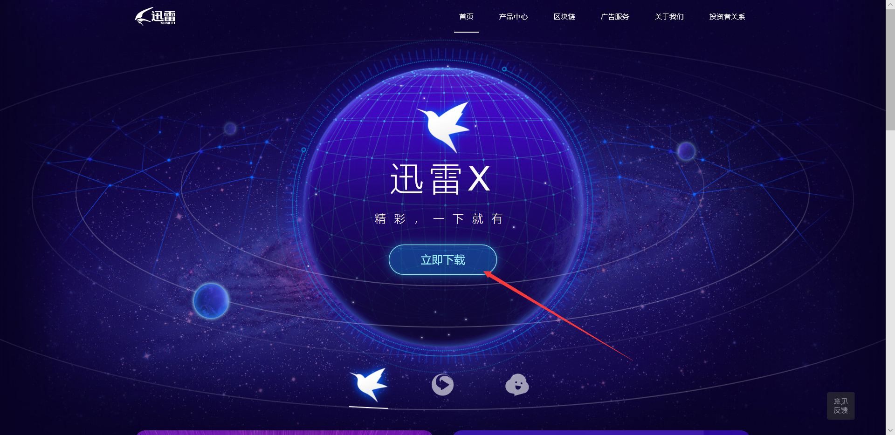
想要下载软件，当然要看看人家的“产品中心“咯
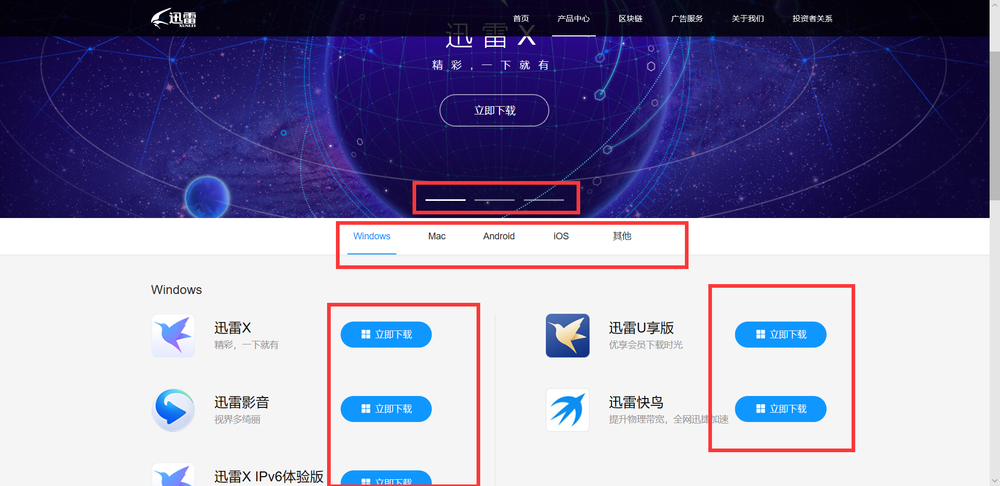
这就很明确了吧，想下载哪个就下载哪个咯。
这里我是要下载迅雷X，所以就点首页中的立即下载，或者产品中心的迅雷X；立即下载都OK
同样会弹出一个窗口，还算明显吧，我们点击保存旁边的小箭头，会向上展开另存为的选项，然后就点击另存为，选择保存路径。
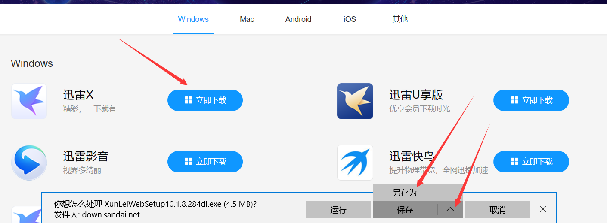
这时再弹出的窗口，你会发现是上次保存壁纸的路径，虽然是为了我们的便利而设定的，但是还是需要改一个文件夹啊
PS：文件夹中没有显示之前的图片也没事，就像前面保存图片并没有显示文件夹里图片的压缩包一样，只是因为图片里没法再保存安装包了呀。
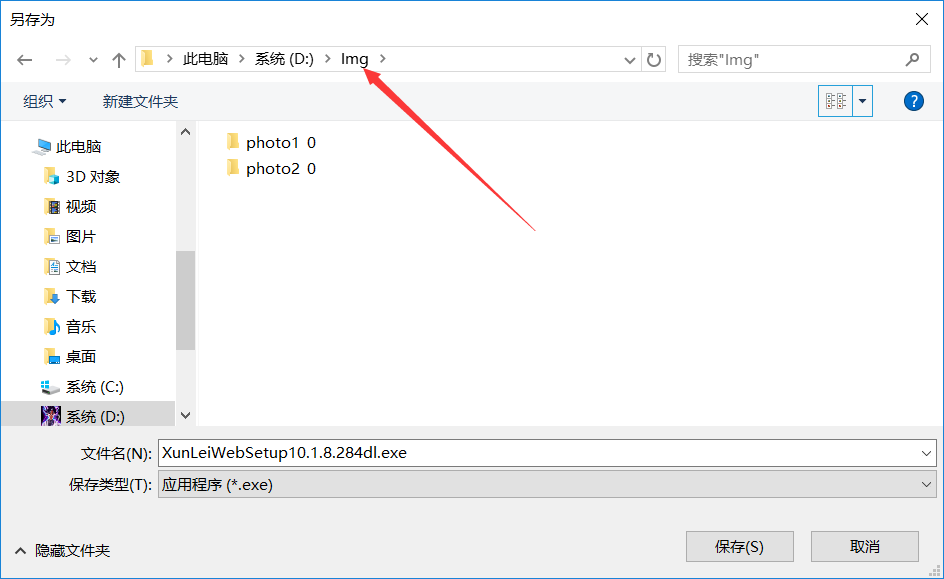
好，我们来改一个文件夹，这里我改了一个叫做“浏览器下载的玩意们”。可以看到我很多安装包都装在了这个文件夹里面。然后点击保存，下载就开始了。
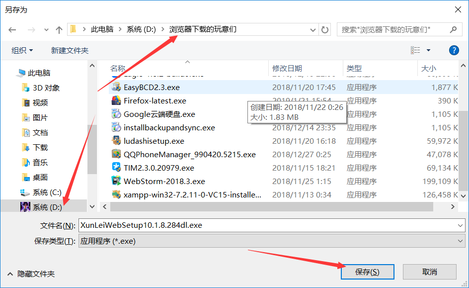
这样我们下载软件就算完成了
流氓下载
有时候我们去搜索一个软件，可能官网下载也比较麻烦，不如直接某某下载站下载了方便，图示如下：
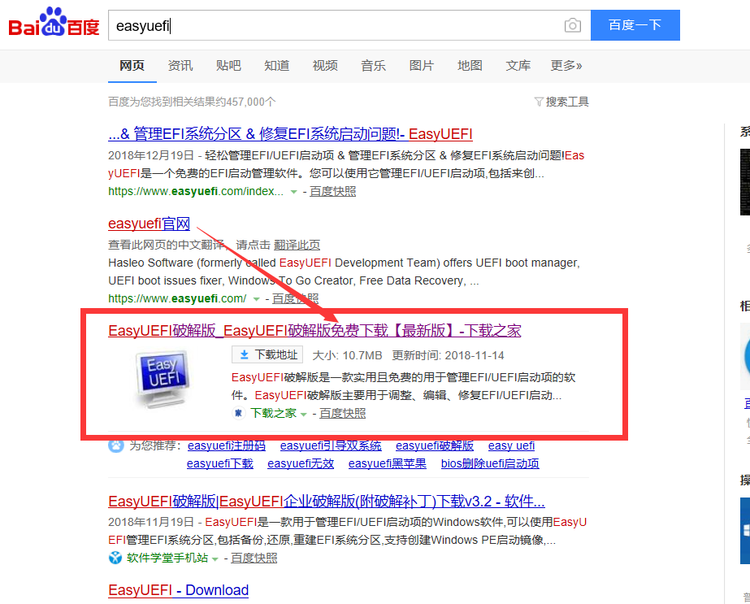
点进去效果如下，讲道理在右侧一般会有广告，也带有“立即下载”和“高速下载”字样，这里我给画出来了，反正大家注意广告两个字就好，一般写的比较小的两个字。
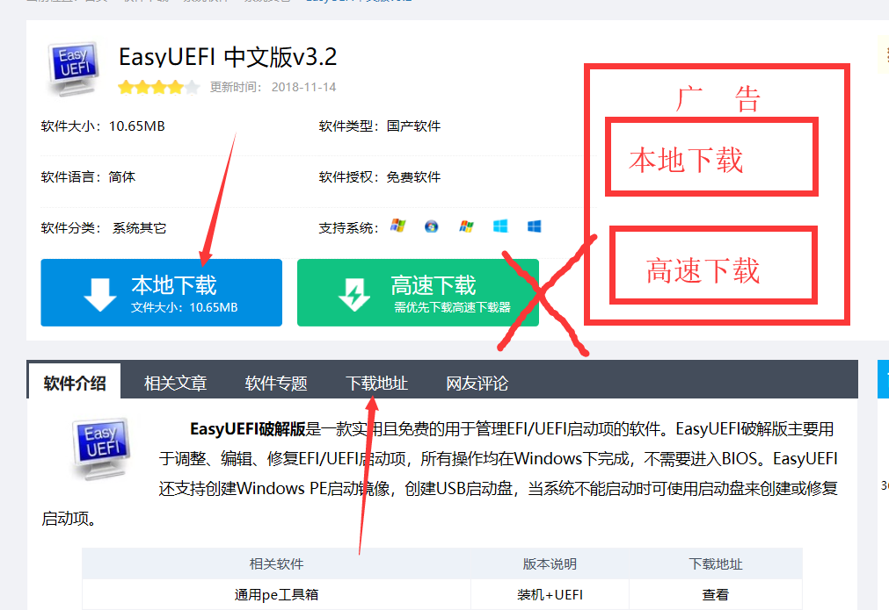
这时候我们可以选择“本地下载”（推荐）或者下方的“下载地址”，效果一样会跳转到下图位置：
这里要注意别点那些高速下载地址，可能有坑，下面的几个“其他下载地址”也不一定都有能用，一般大都能用。这样选择一个下载地址进行下载就ok了
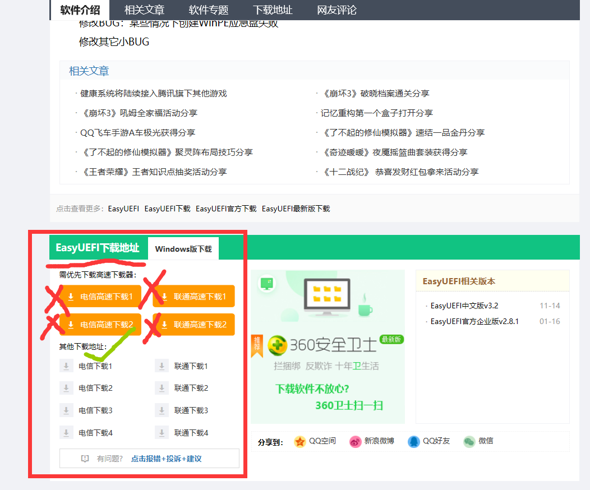
装软件
下载好迅雷以后我们来安装迅雷，我们打开“浏览器下载的玩意们”找到XunleiWebSetup**.exe（从上图可以看到默认保存的名字就是这个，当然可以自行修改）
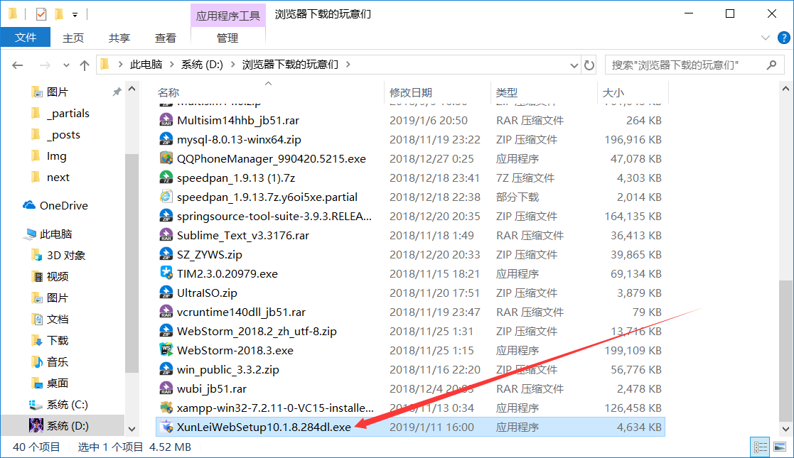
然后双击打开，如果弹出是否选择的窗口，当然选择“是”咯，要不然没法完成安装呀。
选择“是”后我们进入到安装界面。
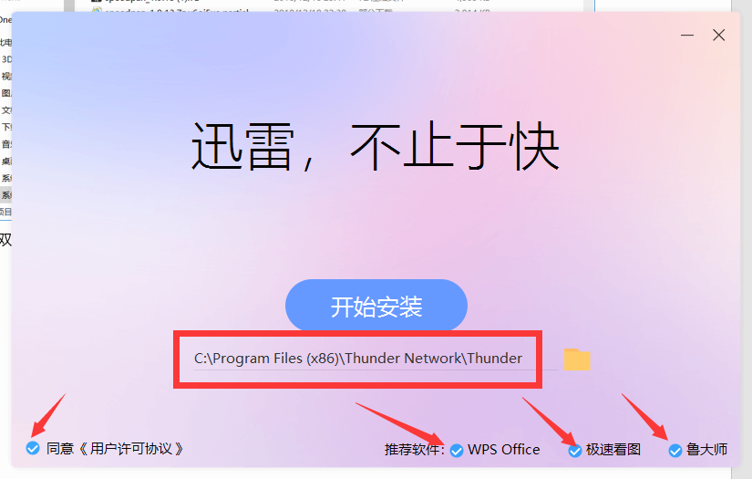
看清楚了！箭头指向的对勾√哪个该留哪个不该留心里要有点数！有很多小白就是因为这些勾下载了一群垃圾软件，导致电脑严重卡顿，还有中病毒的呢。
那些推荐软件就是在做广告，个人非常不建议下载，如有需要，官网走一波。
但是呢，人家的“《用户许可协议》“你总得同意吧，要不然就没办法用咯~
然后还是路径问题，默认的是C盘，老是放在C盘的话就会乱七八糟的了，所以这里要改一下文件夹，点击右边的文件夹图标就可以更改文件夹了。
这里我更改到我D盘下的ROUTE文件夹下的Thunder文件夹，D盘是我平时存东西的地方，ROUTE假装是路径的英文吧，记不太清楚了，Thunder是雷的意思，只是因为英文名字在一些情况下权限比较高，已经习惯了用英文起文件夹了。
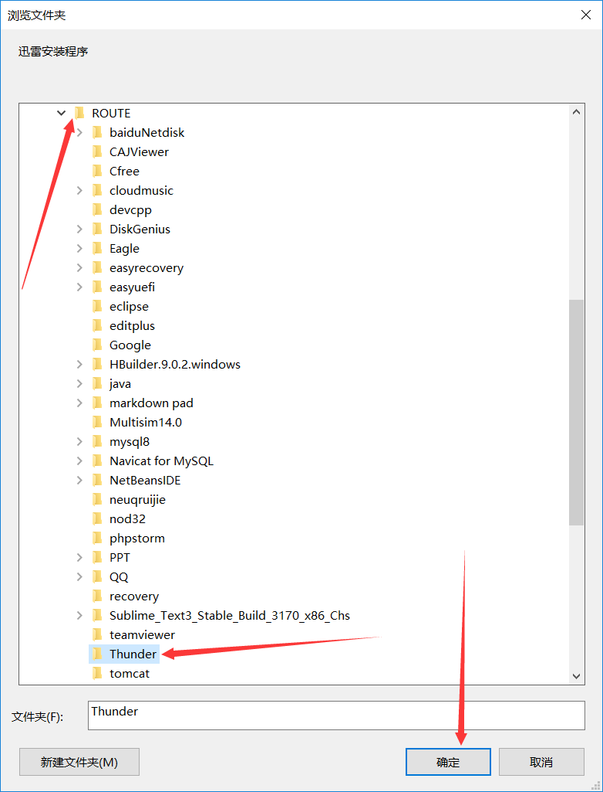
点击确定回到安装界面，如下图所示
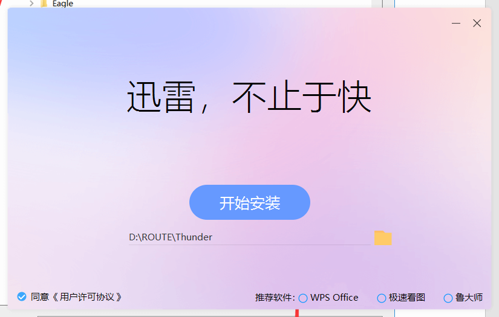
再点击开始安装就开始了真正的安装进程。
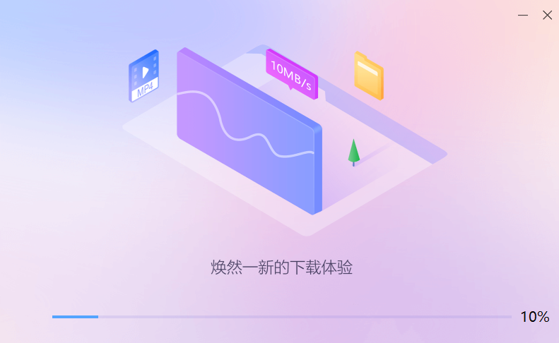
安装完成以后，迅雷自动打开了，但是要注意的是有些软件安装完成以后还会有许多对勾√存在，处理方式如同前文所述。
至此，安装软件的过程就结束了
软件设置
很多软件的安装路径都如上图所示，但是要知道软件的使用过程中也有很多文件要保存，那文件保存到哪里去了呢？
还是以迅雷为例，在进入界面后，右上角有一个向下展开的图标，如下图所示，鼠标放在上面可以显示相应的信息（大多数未知图标的信息都可以以此获取），显示的是“主菜单“这里可以更改相关的设置。
emmmm既然图中出现了广告，那再顺便说一下广告的处理，可以看到广告上有不十分明显的“不再弹出“四个字，字面意思。其他诸如腾讯新闻之类的东西，也大都可以找到”不再弹出“四个字，或者在主菜单中设置。
然后继续说主菜单，我们点进去，弹出下拉菜单，其中有几个点要说：
首先是开机自启，虽然影响不大，但是还是会对你的开机速度有影响；
其次是设置中心，常规设置都在里面，但是设置完成之后还是建议再点击一下“更多“来看看，可能有更多其他快捷的设置噢。
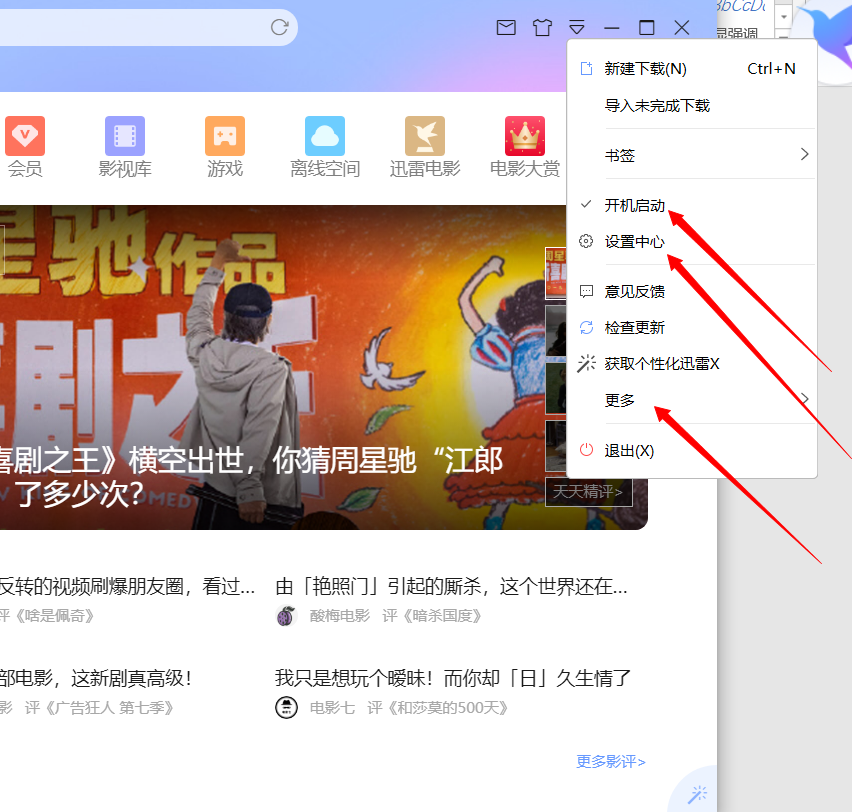
我先把开机启动的对勾√给去点，点一下就行，当然，几乎所有的开机启动项都会在任务管理器中显示，后面会介绍。
然后点击设置，图示如下。诶？很人性啊，默认到我E盘还自动建了个迅雷下载的文件夹嘿嘿，但是呢，我准备先把D盘存满，再去管理E盘。所以我要给改成D盘的迅雷下载，这就不再详细介绍了。
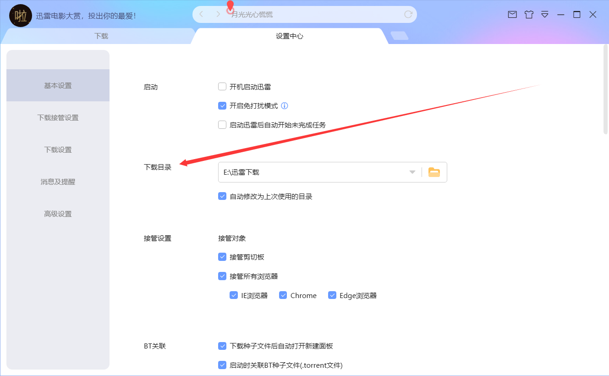
再点开更多看看呢？好,不用看了。
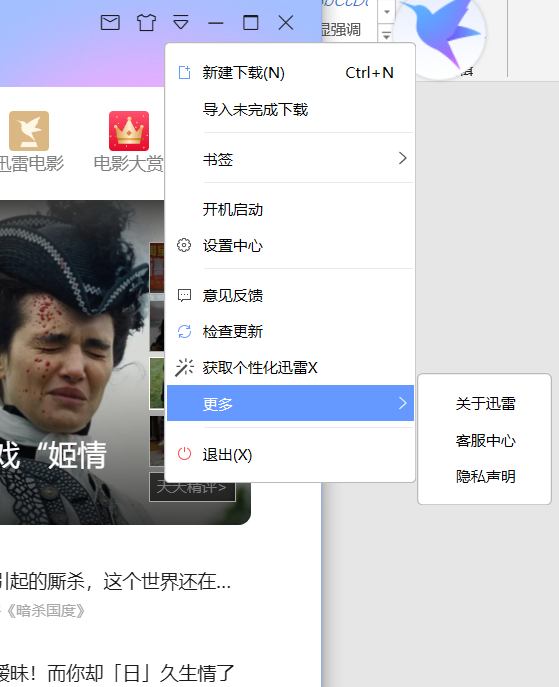
卸载软件
软件也安装成功了，设置完成了，那么有一天我突然想卸载软件怎么办呢？
方法一：
我们知道install是安装的意思，那uninstall就是卸载的意思咯。我们找到软件被安装的位置，然后找找看有没有uninstall字样，有的话双击就可以完成卸载咯。
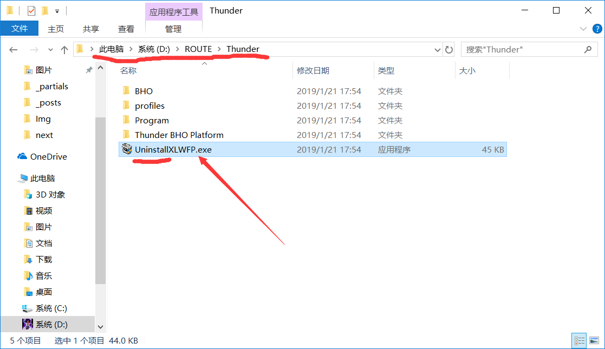
方法二：
我们在搜索框中搜索“控制面板“并单击打开。
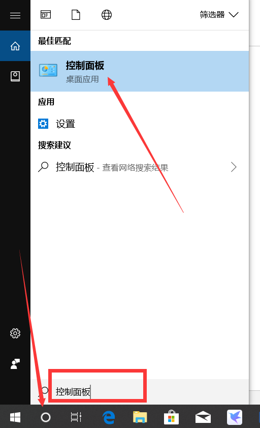
在控制面板主页中找到“卸载程序“并打开
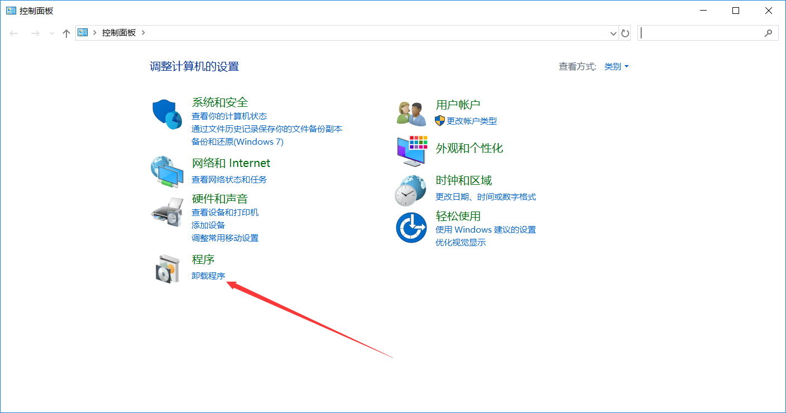
找到需要卸载的软件，这里仍以迅雷为例，右键选项，此时可以选择卸载。
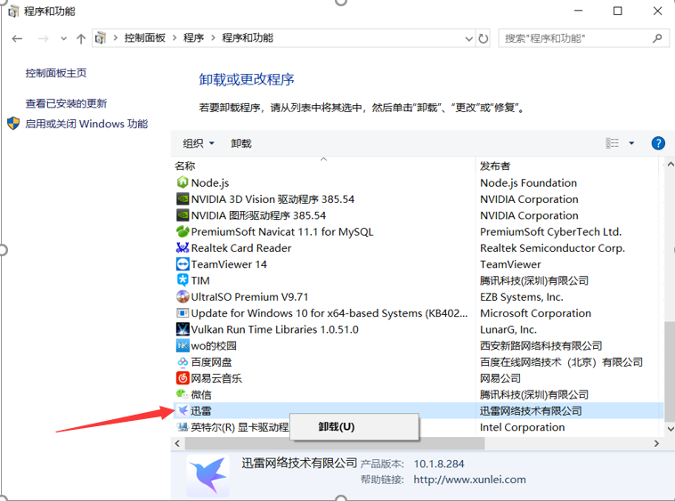
需注意，虽然选择了卸载，但仍有可能“上当受骗“，具体操作只需要仔细根据提示操作就可以了，软件方一般为了挽留大家，都会将”卸载“二字不起眼化，所以大家要仔细寻找噢。
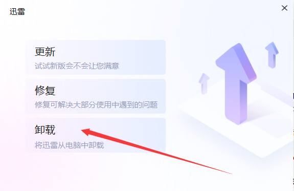
剩下的操作就不给大家一一示范了，根据提示就可以咯。
方法三：
借助第三方软件帮忙卸载，这里以大家熟知的360软件管家为例，找到软件卸载，在右侧选择操作就ok（借图一用，我真的不是懒得下一遍，你们信我的对不对？）
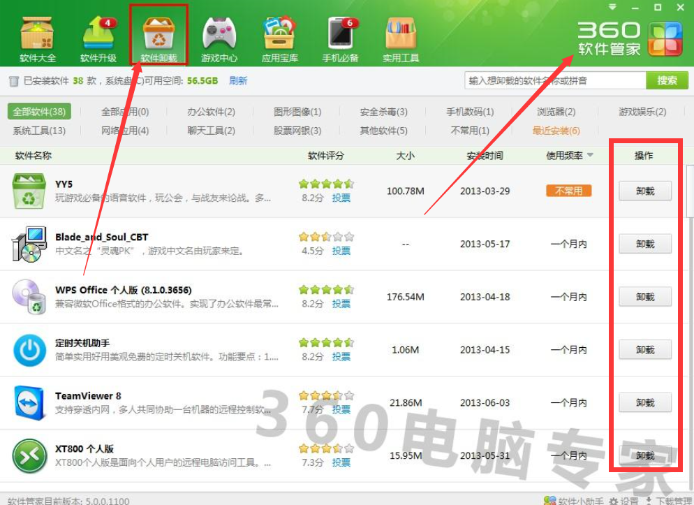
如果没有卸载干净，会有相应提示，点击“强力清扫“即可
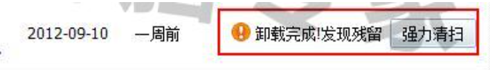
附加一些小技巧
开机自启管理
打开任务管理器（CTRL shift esc）如果有详细信息的话点击详细信息，如果没有看下一步。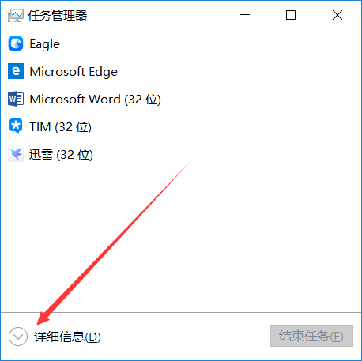
然后点击“启动“二字，在状态一栏可以一览你的自启项无余。想要禁用的右键禁用即可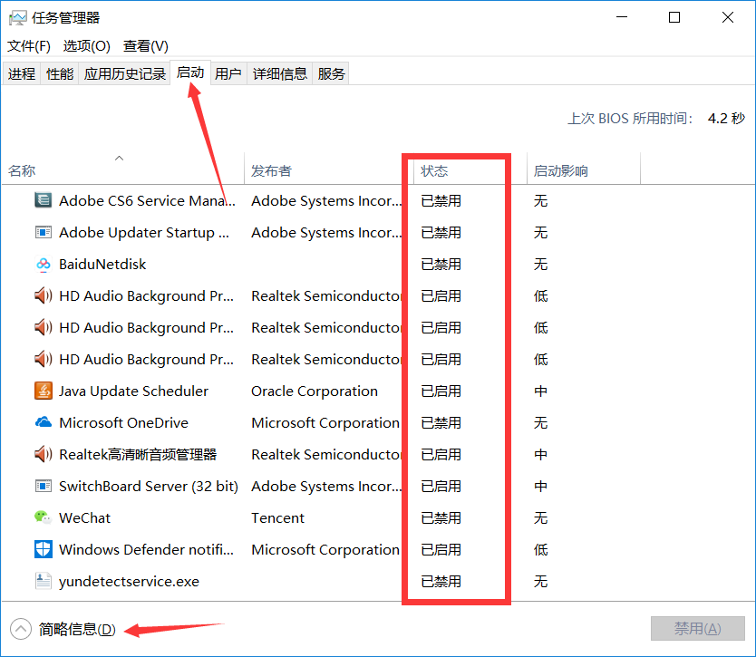
设置此电脑等图标的快捷方式
小白同学可能还找不到”此电脑”的图标应该在哪找,只需要右键桌面选择”个性化”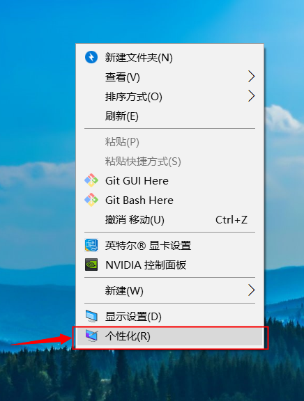
然后在左侧点击”主题”,在右面界面下翻,可以看到”桌面图标设置”然后点击就好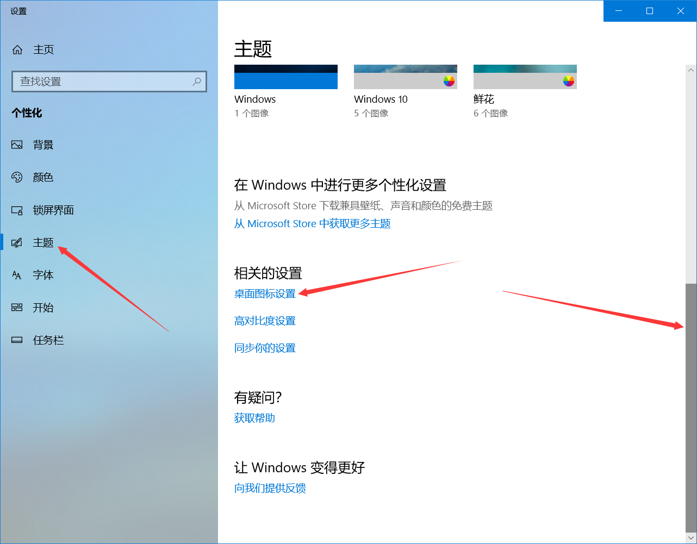
把想要的图标前面打勾,再点击确定就行. 一般给同学重装系统后就加这俩图标.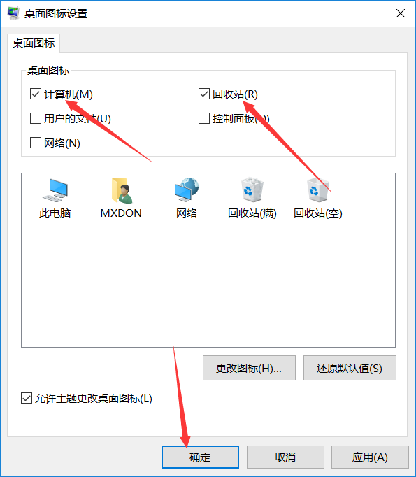
如果显示的图标特大或者特小,还是右键桌面,点击显示设置,再进行相关的设置就ok了,大家当作作业来联系吧(手动黑脸)
如果软件卡死,可以在任务管理器中右键结束任务,任务管理器的打开方式可以快捷键(CTRL shift esc)直接打开,
也可以(CTRL alt delete)后选择任务管理器,此过程看字就行,不放图了,
也可以右键桌面最底下,叫做任务栏,然后找到任务管理器再点一下就打开了.如果电脑有些功能不能用了呀,弹窗报错呀,看看报错信息和提示啊,然后去百度就好咯. 管家培训,不过这一句话而已,无非是搜的多了,经验略微丰富. 像网络有问题可以先”疑难解答一下”，诊断问题后再根据问题来进行搜索就ok了。
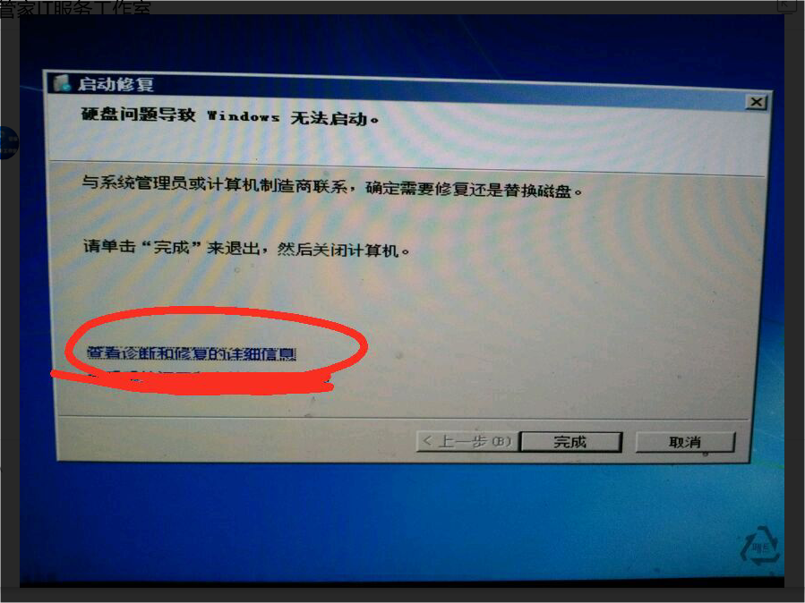
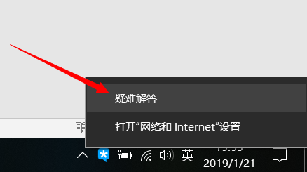
一些常用快捷键,再说一次吧
Win E 打开资源管理器
Win D 最小化所有界面
Win M 显示桌面
Win ←或→ 界面大小变一半,顺便靠边站
Win R 打开运行
Win shift S win10系统截图,1809版本以上截图贼方便
CTRL shift esc 任务管理器
Alt F4 强制关闭最前窗口,如果没有就是打开关机界面
CTRL shift delete 万能快捷键,试试就知道了
Alt tab 切换最前窗口
Win alt tab 任务视图
Win CTRL D 新建桌面
Win CTRL ←或→ 切换桌面
等等
此外还有一些软件的特有快捷键,大家自行探索就ok了Tim的文件储存路径修改
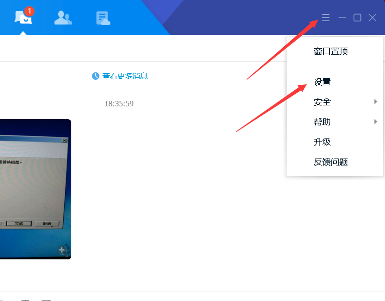
要学会举一反三噢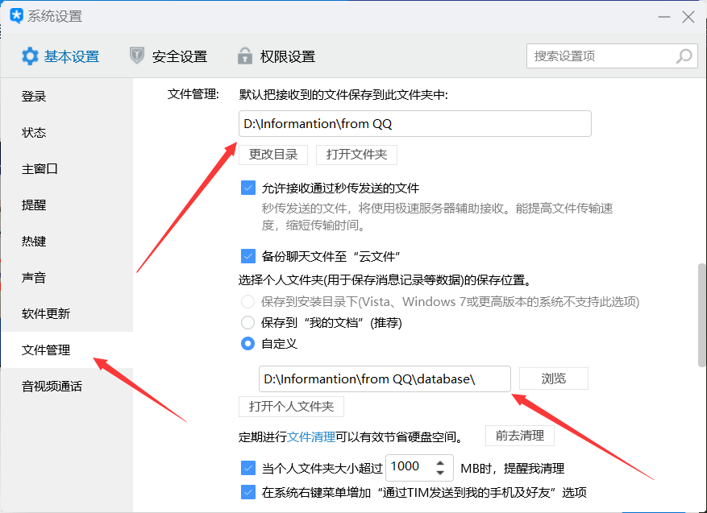
我这路径已经是修改过的了，见名知意最好。如何显示文件后缀名，这个问题主要是大家可能看不懂文件格式，但是有了文件后缀名就可以清楚的区分，到底怎么看呢？方法很简单。
首先打开资源管理器，点击上方查看，再将右侧的“文件扩展名“前面的勾打上就ok了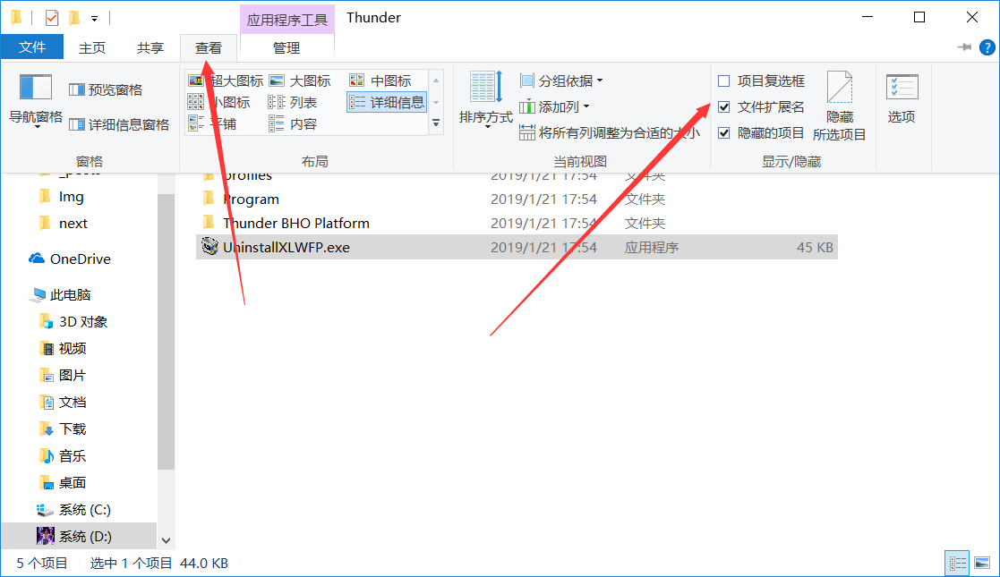
强制关机的方法是：长按电源键不松直至电源指示灯熄灭！如果不确定可以按个5到6秒差不多了。
后记
emmmm写个后记假装完整
在这个互联网的时代，大家要充分利用信息的爆炸特点，不会就查。
大学大学，大不了自己学。
大家新年快乐，送给小白们的新年礼物，祝大家萌新小白变可爱大白。
大佬们就，新年快乐，祝发量无限嘿嘿嘿。